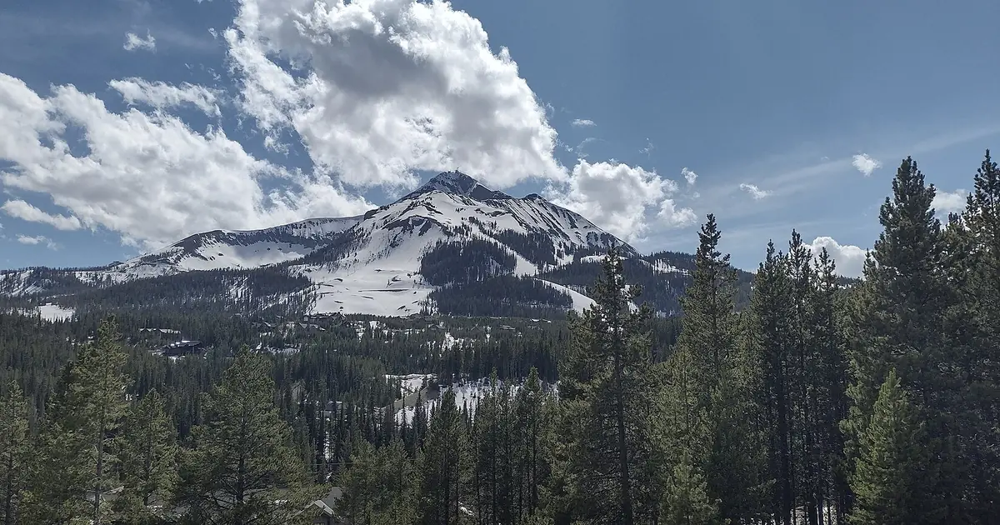

Big Sky im Maßstab: wie groß der Berg ist und wie sich sein Schnee mit der Höhe ändert
Zahlen über Big Sky sind leicht zu zitieren und schwer vorzustellen. Tausende Acres, Hunderte Abfahrten, ein pyramidenförmiger Gipfel. Dieser Beitrag übersetzt die Größe in Alltagsbilder und zeigt dann, was unsere Schneehistorie (ein Modell aus 46 vergangenen Wintern, keine Meldungen des Skigebiets) über den Schnee von der Talstation bis zum Gipfel des Lone Mountain sagt.
Die Live-Schneeprognose für Big Sky Resort in der SnowScope-AppSchneehöhen, Pulverschnee-Alarme und 3D-Karte, gratis.
Die Fläche: eine Kleinstadt aus Gelände
Big Sky umfasst etwa 5.850 Acres, also 9,1 Quadratmeilen (23,7 km²) Skigelände. Das ist die Größe einer Kleinstadt, erschlossen von 40 Liften und mehr als 320 Abfahrten. Praktisch heißt das: Du kannst eine Woche fahren und kaum eine Abfahrt wiederholen, und die entfernten Ecken liegen weit vom Startpunkt. Plane den letzten Lift zurück zu deiner Basis schon vor dem Mittagessen, nicht um 15 Uhr.

Die Höhe: ein Gipfel über allem
Der Gipfel des Lone Mountain liegt auf 11.166 ft (3.403 m), und der Höhenunterschied des Skigebiets beträgt etwa 4.350 ft (1.330 m). Stell dir drei oder vier hohe Bürotürme übereinander vor und bedecke sie mit Schnee. Die Lone Peak Tram mit zwei Kabinen für je bis zu 75 Personen bringt Skifahrer ganz nach oben; darunter breitet sich der Berg in Mulden, Waldabfahrten und langen präparierten Pisten aus.
Der Schnee: Tal und Gipfel sind zwei Welten
Die Höhe verändert alles. In unserem Modell erreicht die Talstation auf 6.818 ft (2.078 m) einen üblichen Saisonhöchstwert von nur etwa 28 in (71 cm). Die Bergmitte auf 8.990 ft (2.740 m) kommt auf etwa 82 in (208 cm), nahe dem Gipfel auf 11.161 ft (3.402 m) auf etwa 137 in (347 cm): rund fünfmal so viel wie im Tal. Oben bleibt es auch länger weiß, mit Schnee am Boden an etwa 251 Tagen eines typischen Winters.
Die Saison: lang oben, kurz unten
An der Bergmitte hat ein typischer Winter etwa 34 in (86 cm) im Dezember, 47 in (120 cm) im Januar, 56 in (141 cm) im Februar, 61 in (156 cm) im März und 66 in (168 cm) im April, dem schneereichsten Monat. Nahe dem Gipfel wächst die Schneedecke bis in den April, auf etwa 111 in (281 cm), und im Mai liegen noch etwa 101 in (256 cm). Die Bergmitte hält in 9 von 10 Wintern 23 Wochen lang mindestens 20 in (50 cm). Die Schwachstelle ist das Tal: Die untersten Pisten sind von Ende Januar bis März am besten.
Große und kleine Winter
Die Spanne ist groß. Nahe dem Gipfel lag der dünnste Winter unserer Reihe bei etwa 99 in (252 cm), der tiefste bei etwa 276 in (700 cm). Der letzte Winter, 2025-26, erreichte dort etwa 114 in (290 cm), unter dem üblichen Wert. Mit der Zeit ist der Schnee dünner geworden: Der mittlere Höchstwert nahe dem Gipfel sank von etwa 160 in (406 cm) in unseren ersten fünfzehn Wintern auf etwa 124 in (316 cm) in den letzten fünfzehn, an der Bergmitte von etwa 94 in (238 cm) auf etwa 76 in (194 cm).
Anreise und Sicherheit
Big Sky wurde vom Fernsehjournalisten Chet Huntley aus Montana gegründet und öffnete im Dezember 1973. Es liegt etwa 50 Meilen (80 km) von Bozeman entfernt. Der obere Berg ist steiles, ausgesetztes alpines Gelände: Lies die Vorhersage des Gallatin National Forest Avalanche Center, bevor du die präparierten Pisten verlässt.
Tipps für Skifahrer
- Großes Gebiet: plane den Rückweg zu deiner Basis früh am Nachmittag.
- Für den tiefsten Schnee hoch fahren; das Tal ist von Ende Januar bis März am besten.
- Frühjahrsreisen: Der obere Berg hält seinen Schnee meist bis in den April.
- Schnee auf unserer Karte heißt nicht, dass ein Skigebiet geöffnet ist: Lifte und Tram auf der offiziellen Website prüfen.
Quellen und Nachweise
- Wikipedia (en), 'Big Sky Resort' (abgerufen am 8. November 2026): Fläche, Höhenunterschied, Lone Mountain, Lifte, Abfahrten, Lone Peak Tram, Chet Huntley, Eröffnung 1973, Entfernung nach Bozeman. en.wikipedia.org/wiki/Big_Sky_Resort
- Gallatin National Forest Avalanche Center, Lawinenvorhersagen. www.mtavalanche.com/
Zu diesen Zahlen
Schneewerte: SnowScope-Schneehistorie, 46 vergangene Winter (1980-81 bis 2025-26) auf drei Höhen des Skigebiets, ein höhenkorrigiertes Modell der Vergangenheit (eine Schätzung für eine Fläche, keine Meldungen des Skigebiets). Lifte, Pisten und Anreise: die Quellen unten, geprüft am angegebenen Datum.
Offizielle Lawinenlageberichte: Gallatin National Forest Avalanche Center
Diesen Bericht zitieren
Für Forschung, Lehre oder Presse: Zahlen und Grafiken sind unter CC BY 4.0 mit dieser Quellenangabe frei nutzbar.
SnowScope (2026), Big Sky im Maßstab: wie groß der Berg ist und wie sich sein Schnee mit der Höhe ändert, https://snowscope.app/blog/de/2026/11/big-sky-resort-size-in-perspective-lone-peak.html, abgerufen am 2026-11-09
SnowScope (Atlas Labs). (2026, November 9). Big Sky im Maßstab: wie groß der Berg ist und wie sich sein Schnee mit der Höhe ändert. SnowScope snow reports. https://snowscope.app/blog/de/2026/11/big-sky-resort-size-in-perspective-lone-peak.html
BibTeX
@misc{snowscope2026bigskyresortsizeinperspe,
author = {{SnowScope (Atlas Labs)}},
title = {Big Sky im Maßstab: wie groß der Berg ist und wie sich sein Schnee mit der Höhe ändert},
year = {2026},
month = nov,
howpublished = {\url{https://snowscope.app/blog/de/2026/11/big-sky-resort-size-in-perspective-lone-peak.html}},
note = {Published 2026-11-09 16:57 UTC; accessed 2026-11-09}
}· CC BY 4.0 · Methoden, Daten und Werkzeuge →
Big Sky Resort: Schnee und Temperatur nach Höhe, dieser Winter vs letzter (Werkzeuge) →
Big Sky Resort folgen
Gratis: eine Nachricht, wenn Neuschnee kommt, und jeden Morgen die Vorhersage.
Weitere Schneeberichte

Bis zum 10. November ergibt unsere Prognose 21 in (53 cm) in Mt Baker, 7 in (18 cm) in Mt. Hood Meadows und 6 in (14 cm) in Hurricane Ridge. Die …

Wo der Dezember 2026 von Montana bis New Mexico schneereicher oder schneeärmer aussieht: die europäische Saisonprognose und unsere Karte, mit Colorado, Utah und den nördlichen Rockies.

Mt Baker bekam in den letzten 72 Stunden 11 in (27 cm) Neuschnee, davon 4 in (11 cm) in den letzten 24 Stunden. Jetzt liegen dort laut unserem …